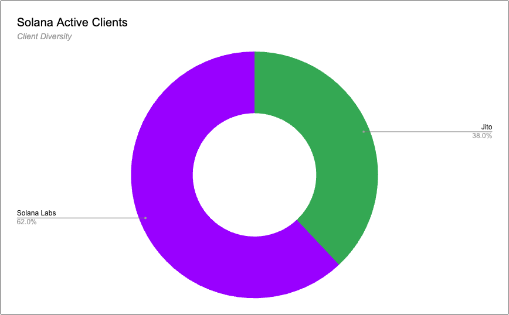
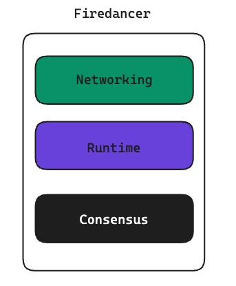
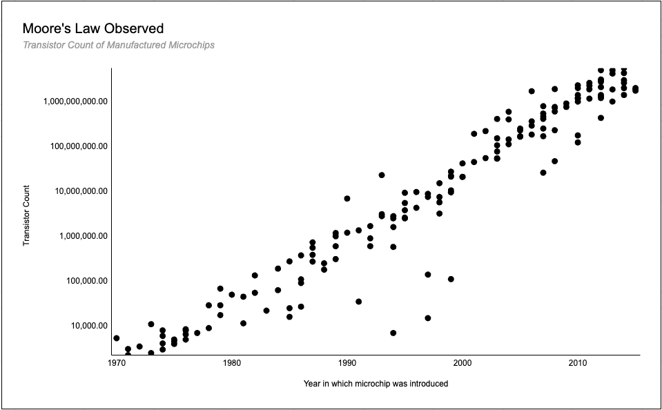
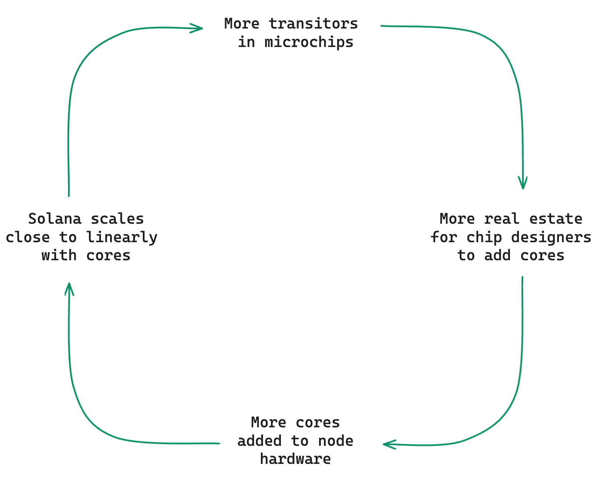
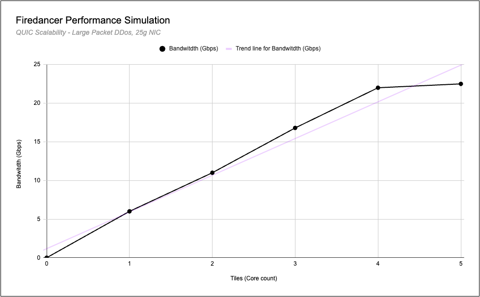
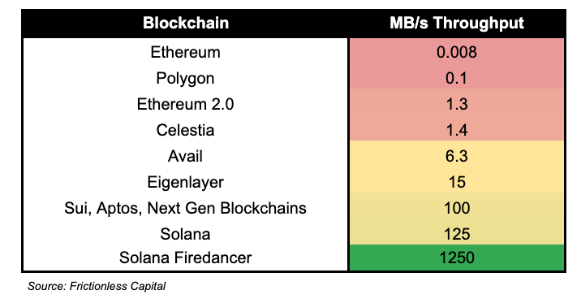
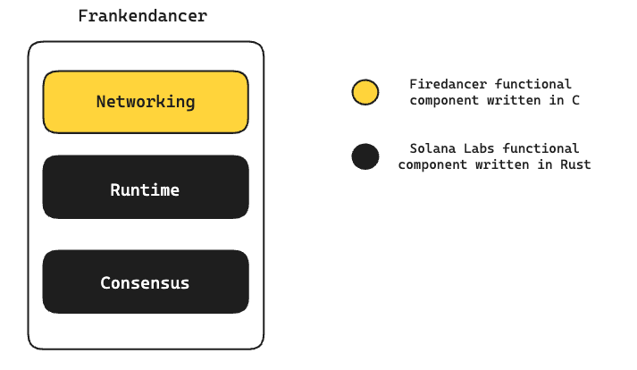

Introduction
At Solana Breakpoint, Firedancer, the highly anticipated new validator client, launched on testnet. Initial tests indicate that Firedancer shows 10 to 100 times greater performance than the existing Solana Labs client.
Solana Client Ecosystem
Firedancer is a validator client, i.e. software that validators run which are crucial for the consensus process, e.g. proposing and attesting blocks. Currently, in the Solanae ecosystem there are two active clients; the Solana Labs client & the Jito client, making Solana the only other major chain apart from Ethereum that has multiple clients.

The Solana Labs client was launched by the Solana team back in March of 2020, when they had little resources, lacking the human capital and the time it’d take to build a high performance client like Firedancer. They also were unable to see the client perform in practice and this led to design choices that in hindsight could be optimised. The Jito client on the other hand is a much newer client, optimised for MEV on Solana. Similar to Ethereum’s MEV geth client, the Jito client enables searchers and validators to extract MEV within blocks. However, Solana block production doesn’t function like the Ethereum ecosystem, Solana’s blocks are streamed continuously, meaning there is no Solana mempool, which makes the auction period where searches can bid for MEV opportunities complicated. Jito solves this issue by creating a pseudo mempool allowing searches to view transactions and submit bundles to Jito’s block engine.
Client Interoperability
One question we had was how is the Solana Labs client (and it’s fork, the Jito client) interoperable with Firedancer? Theoretically, Firedancer would process transactions much faster, leaving the slower and more inefficient clients left behind in block propagation and the state of the chain. Anatoly talks
here about how Firedancer optimizations can proliferate the existing clients, allowing them to increase their high throughput so that it matches Firedancers. An example of this is Jito’s plan to create JitoDancer; the Jito client with the necessary optimisations to function alongside Firedancer.
Firedancer Overview
This leads us to Firedancer. Developed by a team from the high frequency trading and market making firm, Jump Group, Firedancer was built to optimise the software inefficiencies of the Solana labs client, creating a truly performant validator that is only bottlenecked by the client’s hardware. Jump rewrote the software from the ground up, opting to write it in the C programming language (for high hardware performance and reliability). While the client is written in C, it is still interoperable with the Solana Labs & Jito Labs clients, despite them being written in Rust. Further, the Firedancer client will work with current Solana validator hardware so users will not need to switch to new machines.
Firedancer Stack
Firedancer rewrites 3 major functional components from the existing Solana Labs client; the Networking, Runtime and Consensus components. Each of these components are optimised in order to bring the client to its hardware limit, without the software debt that the current Solana Labs client inhibits.

Networking
The networking component within Firedancer handles anything over the internet. That includes receiving incoming and outgoing networking activities:
1.
Inbound - Receiving transactions from users
2.
Outbound - Block packing, create & signature verification, sending shreds (portion of a ledger entry)
Run Time
The runtime component is essentially the Solana Virtual Machine (SVM), which is used to execute transactions and other actions submitted by users whilst preserving the state of the chain between executions. The SVM:
1. Validates that a program / transaction only executed operations it was permitted to and prevents double spending.
2. The SVM’s “Sealevel” enables parallel processing of transactions with non-competing state. This is possible as runtime must be told which accounts /state are involved in a transaction before it occurs - so that thousands of non-overlapping transactions can be executed in parallel. More on the SVM
here.
At a high level, the SVM organises the balances and state transitions as a result of users making transactions. It is able to do this at record speeds due to parallel processing.
Consensus
The consensus component of Firedancer handles voting, selection of forks & making sure that the chain is secure and all transactions are valid.
Solana utilises a Proof of History consensus mechanism, which proves and event occurred at a specific moment in time (E.g. before this X and after Y, change this state). This is enabled by each validator node maintaining their own internal clock & encoding the passage of time via a SHA-256, sequential-hashing verifiable delay function.
Simply, validators process information and with the information they include a timestamp of when that information was received, allowing for sequential ordering of transactions / state changes post processing.
Scaling Solana
The resultant effect of these optimisations is that Solana scaling will be bottlenecked by the hardware clients are running and not the software. Therefore, as hardware and bandwidth scale, Solana will scale. This is a particularly attractive way for a chain to scale since it’ll benefit from Moore’s law, although not with a 1-1 correlation.
Coined by the co-founder (Gordon Moore) of Intel in 1965, Moore’s law is the observation that the number of transistors on a microchip (or integrated circuit) doubles approximately every two years, leading to an exponential increase in computing power and a decrease in the cost per transistor. A fully fledged version of Firedancer would therefore scale with a close relationship to the number of transistors in a microchip, since this is closely related to the number of cores a validator can run.

The actual scaling works a bit like this (although there are other factors to consider):
More transistors = more ‘real estate’ for chip designers to work with = more ability to add cores = higher data throughput of Solana

With no software limits, Solana can now scale with bandwidth and hardware. This, in our opinion, is one of the more elegant and pragmatic ways to scale a blockchain whilst maintaining a sufficient level of decentralisation.
Firedancer Statistics
Network Statistics
Early simulations of Firedancer’s network capability (receiving transactions from users to the lead validator) showcase this almost linear scaling with the number of cores on the node’s hardware:

We can see that as the number of cores increases, the bandwidth increases almost linearly. This means that if you double the number of cores on your hardware, you almost double the number of transactions the lead validator receives in the same period of time.
The early network simulations demonstrated at Breakpoint show that 1 million transactions per second can be received per core (25Bps bandwidth) by the lead validator. Therefore users could stream 1 million transactions in a single second to the lead validator if the validator is running just a single core. For reference, the recommended number of cores for a Solana node right now is 12, which you can find
here.
Unfortunately, receiving transactions is only half of the battle when it comes to Firedancers networking function, the nodes also need to create blocks and propagate them to the network.
An early-stage demonstration of the outbound network capacity showcased 6 Gbps per Tile (Core).

If successful, Firedancer will be the highest throughput chain by a factor of 10x. The next generation Move chains like Sui, Aptos & Sei currently process ~100 MB/s of data and Celestia, the main competitor in the modular approach to scaling processes just 1.4 MB/s.
Frankendancer
Frankendancer as it’s being coined is the current version of Firedancer that is currently on testnet. Instead of running the full Firedancer stack with networking, runtime and consensus functional components, it runs a mixture of the Solana Labs client and the new Firedancer client. The networking function component in Frankendancer is from Firedancer, allowing for a greatly increased number of received inbound transactions to the node and also faster processing in the form of quicker block propagation via the outbound networking code. The rest of the node’s core functions are written in Rust and pulled from the Solana Labs client, this is the Runtime and Consensus components.

Timeline
Frankendancer Mainnet - H1 2024
Full Firedancer Testnet - H2 2024